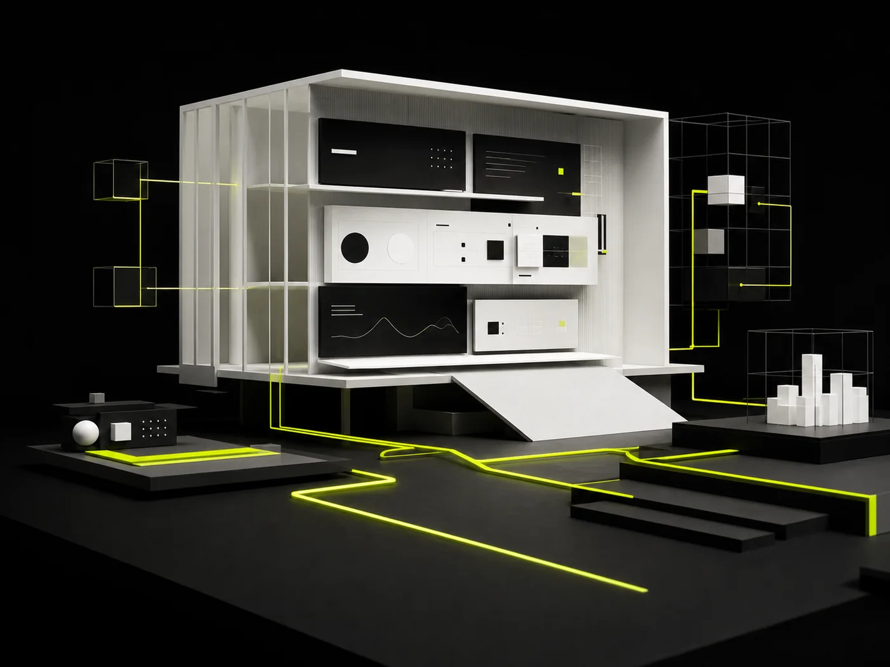
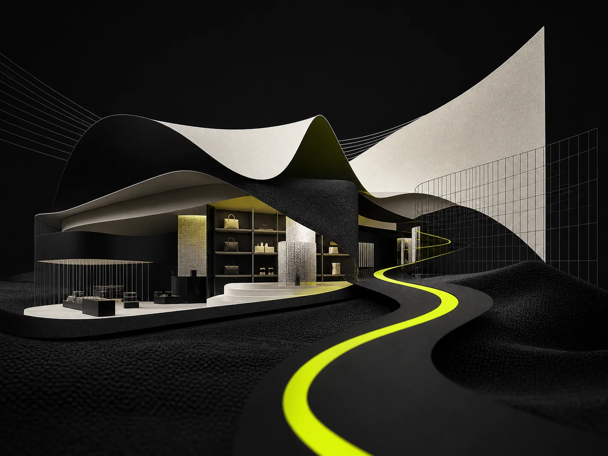

Company websites.
A public-facing home for the business: what you do, who it is for, proof that you can do it, and a clear next step. MASS designs company websites around how buyers evaluate you—not around a generic brochure template.
We turn business strategy into fast, accessible digital experiences—designed to earn attention and engineered to keep it.
A public-facing home for the business: what you do, who it is for, proof that you can do it, and a clear next step. MASS designs company websites around how buyers evaluate you—not around a generic brochure template.
A single, focused page for a campaign, offer, program, or product launch. One audience, one job, one action. Built when paid traffic or a specific offer needs a tighter path than the main site can provide.
Storefronts where catalog structure, product confidence, checkout, and operations have to work as one system. MASS shapes discovery, performance, and the shopping journey so the store can grow without becoming harder to use.
Signed-in spaces for clients, partners, students, or staff. Status, documents, requests, and account work live here so the public site stays simple and operational work has a proper home.
Software in the browser: records, roles, workflows, and integrations. Chosen when people need to do recurring work—not only read, browse, and enquire. Scope follows the users, the data, and the systems around it.
MASS takes web projects when there is a real business problem and a team ready to decide. Each service fits a different operating reality.
Clarify the business problem, users, constraints, and what success will look like before any design starts.
Goals, audience, content, positioning, and technical architecture aligned before pixels move.
Map pages, messages, and information architecture so writing, design, and engineering share one structure.
Clear journeys and distinctive interfaces that make the next action obvious.
Responsive, accessible, maintainable builds tuned for real-world performance.
Check the build against real devices, accessibility, content, and the agreed journeys before it goes live.
Measured rollouts, analytics, iteration, and thoughtful ongoing improvement.
Transfer source, access, documentation, and publishing knowledge so your team can own what launched.
A website presents, explains, and converts. A web application lets people do work. MASS builds both. The comparison below is how we decide which one you actually need—and when a project is really a redesign or a migration.
| Decision | Custom website | Web application |
|---|---|---|
| Job to be done | Be found, understood, and trusted. Move a visitor to enquire, apply, or buy. | Let signed-in people complete recurring work: records, requests, workflows, reports. |
| Who uses it | Public visitors, buyers, recruits, press, and partners scanning the business. | Staff, clients, students, or members who return and need accounts, roles, and saved state. |
| What it holds | Pages, proof, offers, and a publishing model for content. | Data, permissions, business rules, and integrations with the tools you already run. |
| Success looks like | Clarity, speed, search visibility, and a higher-quality next conversation. | Task completion, reliability, fewer manual steps, and work that does not leak into email. |
| Typical MASS fit | Company sites, landing pages, and storefronts such as Inventrics and VastraPvt. | Portals, internal tools, and platforms where the public site is only the front door. |
A redesign is right when the offer is still true but the site no longer explains it. MASS rebuilds structure, design, and front-end around the current audience—see the LearnBay education platform—instead of decorating a sitemap that no longer matches how people choose.
A migration is right when the platform is the constraint: performance, publishing, SEO, or operations. MASS plans redirects, content, and checkout continuity—as with VastraPvt’s Shopify-to-WordPress move—so the new system is faster to run, not only newer to look at.
MASS does not force every website into one framework. We choose technology after discovery: who the users are, what must be published, which systems already exist, and who will maintain the result. Depending on the brief, that can include modern HTML, React, Python, databases, APIs, Cloudflare, and the client’s current business tools.
Public marketing pages, a catalog, or a signed-in workflow each imply a different architecture. We size the build to the actual job.
CRM, inventory, auth, payments, and content tools are constraints, not afterthoughts. New software should connect cleanly or we do not add it.
If your team will edit pages weekly, the CMS is part of the product. If the site should stay fast and tightly controlled, a simpler model wins.
A clever stack that only MASS can touch is a bad stack. We prefer tools your team can host, extend, and understand after handover.
Pages should feel immediate on real phones, not only on a studio connection. We treat weight, images, and critical rendering as design decisions.
Keyboard paths, contrast, structure, and names are built in. If a visitor cannot use the site, it is not finished.
Crawlable HTML, sensible titles, canonical URLs, and content that answers the query. SEO is structure and substance, not a plugin after launch.
Clear templates, documented decisions, and code your team can change. A site that only the original developer understands is already decaying.
MASS can move quickly when decisions and source material arrive on time. The inputs below are the difference between a clean build and a stalled one.
MASS maps the problem, audience, constraints, and success measures.
You share goals, current site or product, competitors you respect, and who can approve.
MASS proposes the sitemap, page jobs, and messaging hierarchy.
You provide existing copy, offers, legal pages, and the facts we should not invent.
MASS designs journeys and interfaces against the agreed structure.
You give brand rules, feedback on the actual screens, and a single decision-maker.
MASS builds the templates, integrations, and front-end to the signed design.
You supply access to hosting, domains, analytics, and third-party accounts.
MASS checks devices, accessibility, forms, and the journeys we promised.
You review with real content and the people who will use or publish the site.
MASS ships to production, verifies redirects, analytics, and search essentials.
You approve go-live, DNS where required, and any freeze on old-site edits.
MASS transfers source, access, documentation, and publishing knowledge.
You name the owners who will update content and who we should train.
There is no single price for every MASS web project. After discovery we define the work and give a project-specific estimate. These are the levers that move it.
A five-template company site is a different build from a program catalog or a multi-role portal. Unique layouts multiply design and engineering time.
Finished copy, images, and product data shorten the calendar. If MASS is waiting on source material, the critical path waits with it.
Forms to a CRM are not the same as inventory, payments, or single sign-on. Each connection needs mapping, permissions, and failure handling.
Logged-in products need authentication, permissions, and often migration of existing records. That is application work, not page work.
Redirects, URL mapping, SEO continuity, and checkout parity add scope that a greenfield site does not have. They also protect the traffic you already earned.
A compressed launch needs more overlap and clearer decisions. Ongoing maintenance is optional, but it should be priced as its own agreement.
Four businesses. Four different operating realities. One standard: make the digital experience clearer, faster, and more useful.

02 Oakspire TechA professional client-facing platform connected to smarter, more efficient operational workflows. 03
VastraPvtA scalable commerce experience shaped around better discovery, performance, and growth.
03
VastraPvtA scalable commerce experience shaped around better discovery, performance, and growth.

04 LearnbayA complete learning-platform experience designed to make programs, proof, and career pathways easier to understand and explore.
Ownership, publishing, integrations, maintenance, and how a MASS web project actually starts.
Ready to brief a project? Talk to MASSYou own the website, content, and the work product agreed in the engagement. At handover MASS transfers source files, repository access, hosting credentials, and publisher accounts so the site is not locked to the agency.
The publishing model is chosen during discovery. Some projects use a CMS so your team can edit pages; others are intentionally static for speed and control. MASS documents the workflow and trains the people who will update the site.
Often, yes. MASS maps the systems, data, permissions, and failure cases first. If the other tool offers a supported API or a stable integration, we can connect forms, catalogs, CRMs, authentication, or internal workflows. See how Oakspire Tech connected a public platform to operational workflows.
Maintenance is optional. Some clients take full ownership at handover. Others agree a support retainer for updates, monitoring, and improvements. Hosting, domains, and third-party accounts remain yours either way.
Visit the contact page or email contact@mass.llc with the problem you want to solve, the outcome that would make the project successful, and any timing constraints. MASS will review the fit and outline the most useful next step.